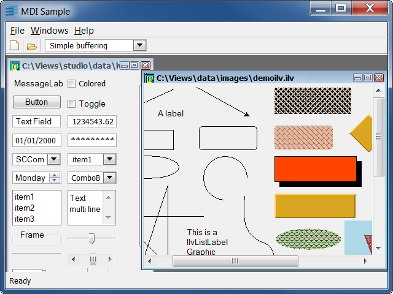

Sample: mdilv
Rogue Wave Views Gadgets ILV Files Viewer
This sample shows how to implement a multiframe application using the IlvViewFrame and IlvDesktopManager classes.

The main window has been built using Rogue Wave Views Studio. It is composed of a menu bar, a toolbar, a status bar, and a working area that will be used to display the frames. Each frame encapsulates an IlvGadgetContainer, itself contained in an IlvScrolledView to allow the scrolling. Here are different types of action that can be executed:
- Load a Rogue Wave Views file: use the menu bar, the toolbar, or the keyboard accelerator CTRL-O. The loaded file will be displayed in a new frame.
- Create an empty frame: use the menu bar, the toolbar, or the keyboard accelerator CTRL-N. You cannot do anything with this frame except moving, resizing, or closing it.
- Close a frame: use the close button of the view frame title bar, or the keyboard accelerator CTRL-F4. A message box appears to make you confirm your choice.
- Toggle between double and simple buffering: use the toolbar option menu to choose between simple and double buffering.
- Arranging frames: use the menu bar menu 'Windows' to tile, cascade, or activate a specific frame.
Classes involved:
IlvViewFrameIlvScrolledViewIlvDesktopManagerIlvApplicationIlvFileBrowserIlvGadgetContainer
Source files: